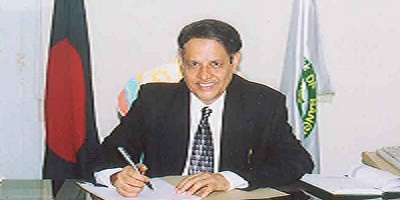
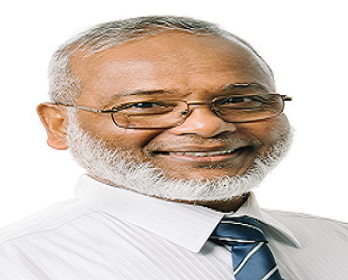

Asian University of Bangladesh
It gives me great pleasure to welcome you to Asian University of Bangladesh, a place of learning and scholarship, engaged in preparing young men and women to face the challenges of the new millennium. In its efforts towards progress and development, Bangladesh needs high quality human resources, professionally sound and morally upright, equipped with the latest knowledge in multi-disciplinary

Mission
To serve as a leader by encouraging innovative ideas and forward-thinking so that our team can create technology solutions that will improve the lives of others.To use my gifts as a speaker to improve the self-worth of people around the world.

Vission
We are committed to achieving new standards of excellence by providing superior human capital management services and maximizing the potential of all stakeholders - clients, candidates and employees - through the delivery of the most reliable, responsive.

Goals
I have worked with both of these technologies in 2021. I used Cosmos the most with my website, and storing data for it. I used Mongo/Atlas for auditing for a project I did for my previous job. I wouldn't say I was expert in either of these, but I am starting

MESSAGE FROM THE HONOURABLE FOUNDER & FOUNDER VICE CHANCELLOR
Professor Abulhasan M. Sadeq, Ph.D.
It gives me great pleasure to welcome you to Asian University of Bangladesh, a place of learning and scholarship, engaged in preparing young men and women to face the challenges of the new millennium. In its efforts towards progress and development, Bangladesh needs high quality human resources, professionally sound and morally upright, equipped with the latest knowledge in multi-disciplinary fields and with technological ability. AUB commits to deliver this to the nation.

VICE CHANCELLOR | SHORT BIOGRAPHY OF PROFESSOR SHAHJAHAN KHAN, PHD
Professor Dr Shahjahan Khan is the Vice Chancellor and Chief Executive Officer of the Asian University of Bangladesh. Professor Shahjahan Khan obtained his PhD and MSc degrees in Mathematical Statistics from the University of Western Ontario (UWO), Canada; and BSc (Hon) and MSc in Statistics from Jahangirnagar University, Bangladesh. He started his academic career as a Lecturer at Dhaka University, Bangladesh in 1980, and was awarded Commonwealth Scholarship in the UK